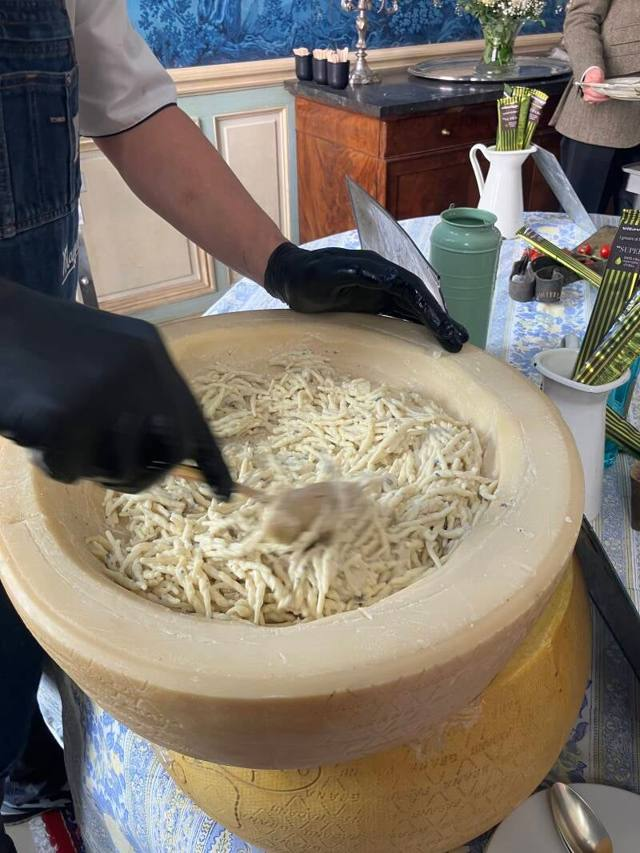
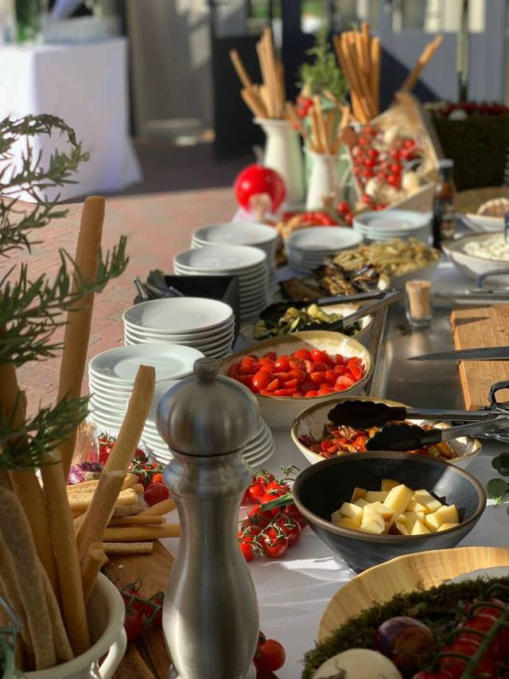
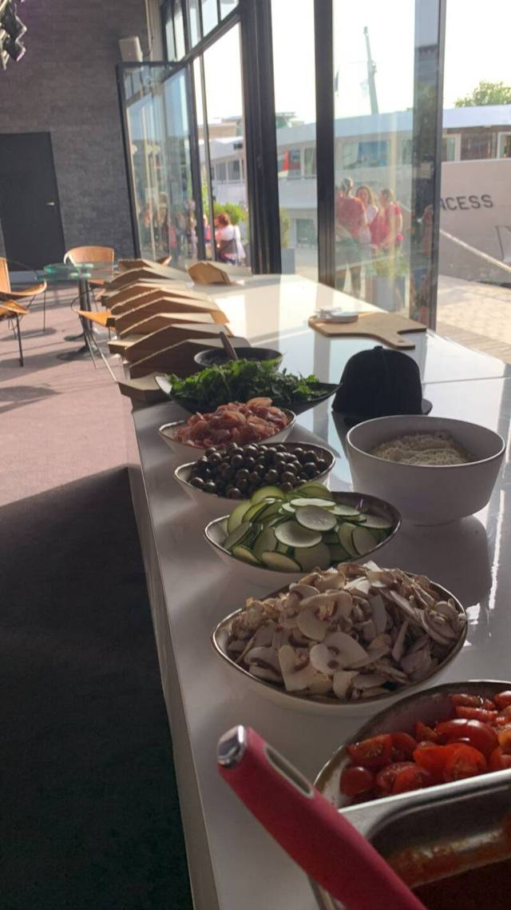
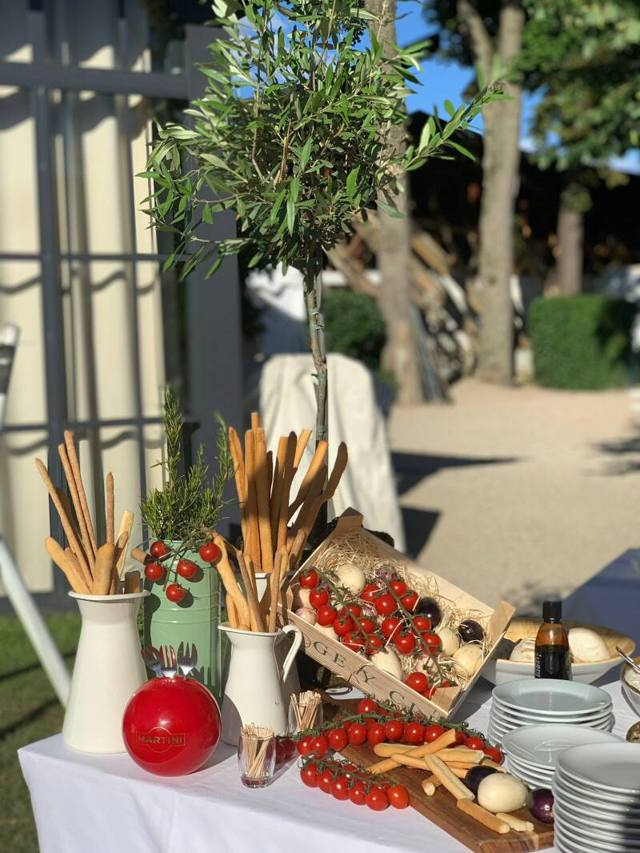
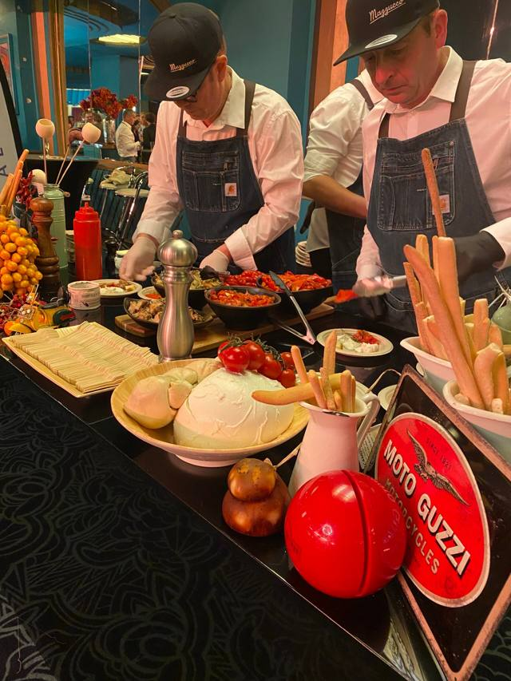
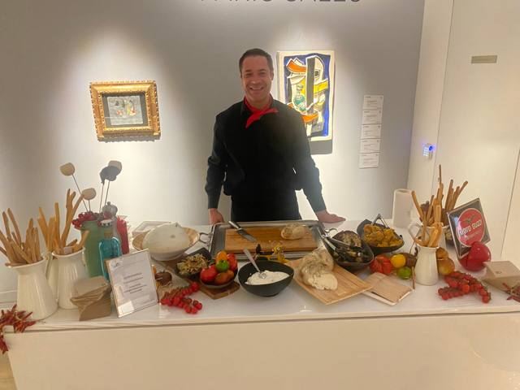
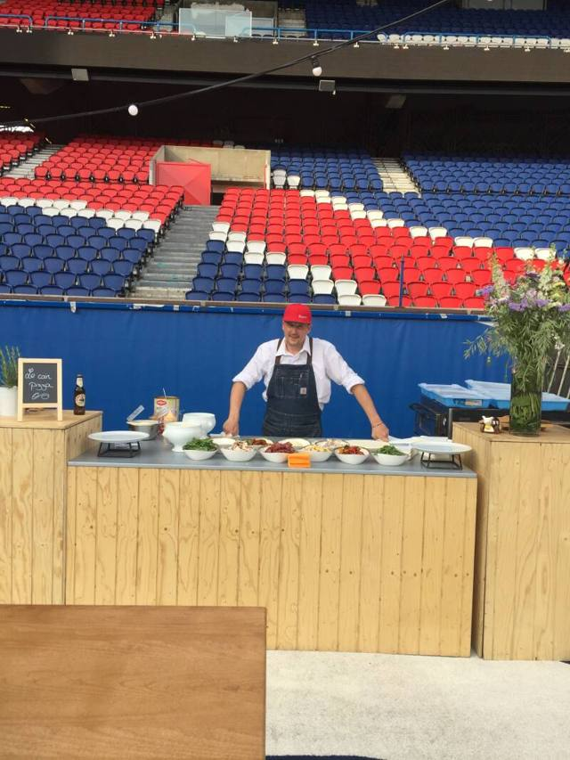
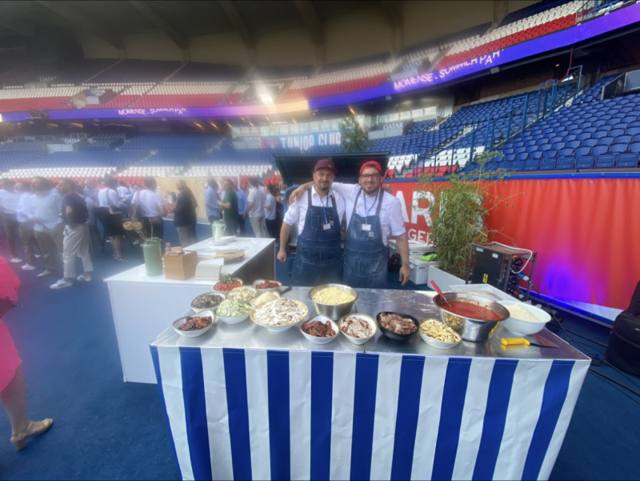
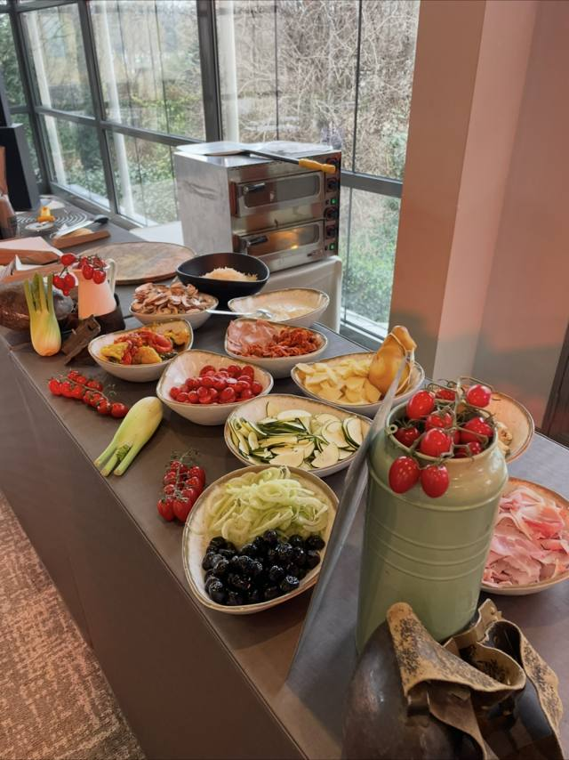
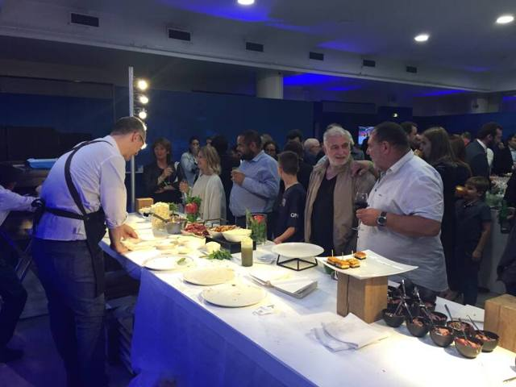

{{HEADER}}

<main id="top">
<section class="devis-hero black">
  <div class="wrap">
    <span class="kicker">La galleria · photos</span>
    <h1 style="margin-top:16px">Nos événements <span class="script" style="display:block;color:var(--gold);font-size:.6em;transform:rotate(-3deg);transform-origin:left">en images</span></h1>
    <p class="lede" style="margin-top:20px">Buffets, bars et animations italiennes réalisés par Lorenzo et son équipe : soirées d'entreprise, salons, stades, rooftops et réceptions.</p>
  </div>
</section>

<section class="section config" style="padding-top:48px">
  <div class="wrap">
    <div class="gal-filters" role="group" aria-label="Filtrer les photos">
      <button type="button" data-f="all" aria-pressed="true">Toutes</button>
      <button type="button" data-f="buffets" aria-pressed="false">Buffets</button>
      <button type="button" data-f="evenements" aria-pressed="false">Événements</button>
      <button type="button" data-f="produits" aria-pressed="false">Produits</button>
      <button type="button" data-f="equipe" aria-pressed="false">L'équipe</button>
    </div>
    <div class="gal" id="gal">
      <figure class="shot" data-cat="produits"><button type="button" aria-label="Agrandir : Pâtes fraîches dans la roue de parmesan"></button><figcaption>Pâtes fraîches dans la roue de parmesan</figcaption></figure>
      <figure class="shot" data-cat="buffets"><button type="button" aria-label="Agrandir : Buffet italien en terrasse"></button><figcaption>Buffet italien en terrasse</figcaption></figure>
      <figure class="shot" data-cat="evenements"><button type="button" aria-label="Agrandir : Bar italien en tribune"></button><figcaption>Bar italien en tribune</figcaption></figure>
      <figure class="shot" data-cat="equipe"><button type="button" aria-label="Agrandir : L'équipe derrière le buffet"></button><figcaption>L'équipe derrière le buffet</figcaption></figure>
      <figure class="shot" data-cat="produits"><button type="button" aria-label="Agrandir : Mozzarella et pain"></button><figcaption>Mozzarella et pain</figcaption></figure>
      <figure class="shot" data-cat="buffets"><button type="button" aria-label="Agrandir : Cocktail sur un toit de Paris"></button><figcaption>Cocktail sur un toit de Paris</figcaption></figure>
      <figure class="shot" data-cat="produits"><button type="button" aria-label="Agrandir : Pizzas à la sortie du four"></button><figcaption>Pizzas à la sortie du four</figcaption></figure>
      <figure class="shot" data-cat="evenements"><button type="button" aria-label="Agrandir : Stand de salon"></button><figcaption>Stand de salon</figcaption></figure>
      <figure class="shot" data-cat="produits"><button type="button" aria-label="Agrandir : Antipasti maison"></button><figcaption>Antipasti maison</figcaption></figure>
      <figure class="shot" data-cat="buffets"><button type="button" aria-label="Agrandir : Buffet sous verrière"></button><figcaption>Buffet sous verrière</figcaption></figure>
      <figure class="shot" data-cat="equipe"><button type="button" aria-label="Agrandir : Service des pizzas"></button><figcaption>Service des pizzas</figcaption></figure>
      <figure class="shot" data-cat="evenements"><button type="button" aria-label="Agrandir : Bar sur scène"></button><figcaption>Bar sur scène</figcaption></figure>
      <figure class="shot" data-cat="buffets"><button type="button" aria-label="Agrandir : Buffet au jardin"></button><figcaption>Buffet au jardin</figcaption></figure>
      <figure class="shot" data-cat="produits"><button type="button" aria-label="Agrandir : La carte des pizzas"></button><figcaption>La carte des pizzas</figcaption></figure>
      <figure class="shot" data-cat="equipe"><button type="button" aria-label="Agrandir : En cuisine, devant les invités"></button><figcaption>En cuisine, devant les invités</figcaption></figure>
      <figure class="shot" data-cat="evenements"><button type="button" aria-label="Agrandir : Service en soirée"></button><figcaption>Service en soirée</figcaption></figure>
      <figure class="shot" data-cat="buffets"><button type="button" aria-label="Agrandir : Antipasti et Vespa"></button><figcaption>Antipasti et Vespa</figcaption></figure>
      <figure class="shot" data-cat="equipe"><button type="button" aria-label="Agrandir : Lorenzo au buffet"></button><figcaption>Lorenzo au buffet</figcaption></figure>
      <figure class="shot" data-cat="evenements"><button type="button" aria-label="Agrandir : Pizzaiolo en tribune"></button><figcaption>Pizzaiolo en tribune</figcaption></figure>
      <figure class="shot" data-cat="buffets"><button type="button" aria-label="Agrandir : Buffet dans un salon"></button><figcaption>Buffet dans un salon</figcaption></figure>
      <figure class="shot" data-cat="evenements"><button type="button" aria-label="Agrandir : Bar en soirée"></button><figcaption>Bar en soirée</figcaption></figure>
      <figure class="shot" data-cat="equipe"><button type="button" aria-label="Agrandir : L'équipe en réception"></button><figcaption>L'équipe en réception</figcaption></figure>
      <figure class="shot" data-cat="evenements"><button type="button" aria-label="Agrandir : Buffet en plein air"></button><figcaption>Buffet en plein air</figcaption></figure>
      <figure class="shot" data-cat="buffets"><button type="button" aria-label="Agrandir : Antipasti en buffet"></button><figcaption>Antipasti en buffet</figcaption></figure>
      <figure class="shot" data-cat="buffets"><button type="button" aria-label="Agrandir : Bar italien en salle"></button><figcaption>Bar italien en salle</figcaption></figure>
      <figure class="shot" data-cat="evenements"><button type="button" aria-label="Agrandir : Four mobile"></button><figcaption>Four mobile</figcaption></figure>
      <figure class="shot" data-cat="equipe"><button type="button" aria-label="Agrandir : Service au jardin"></button><figcaption>Service au jardin</figcaption></figure>
      <figure class="shot" data-cat="evenements"><button type="button" aria-label="Agrandir : Bar dans une cour"></button><figcaption>Bar dans une cour</figcaption></figure>
      <figure class="shot" data-cat="buffets"><button type="button" aria-label="Agrandir : Buffet en ruelle"></button><figcaption>Buffet en ruelle</figcaption></figure>
      <figure class="shot" data-cat="evenements"><button type="button" aria-label="Agrandir : Service au comptoir"></button><figcaption>Service au comptoir</figcaption></figure>
    </div>
    <div class="cat-cta" style="margin-top:40px">
      <a class="btn btn-ink" href="devis.html">Composer mon événement</a>
      <p class="gal-note" style="margin:0">Une idée de mise en place ? Composez votre événement, Lorenzo vous répond personnellement.</p>
    </div>
  </div>
</section>

<div id="lightbox" role="dialog" aria-modal="true" aria-label="Photo agrandie" hidden>
  
  <p class="lb-cap"></p>
  <button type="button" class="lb-close" aria-label="Fermer">✕</button>
  <button type="button" class="lb-prev" aria-label="Photo précédente">‹</button>
  <button type="button" class="lb-next" aria-label="Photo suivante">›</button>
</div>

{{CONTACT}}
</main>
